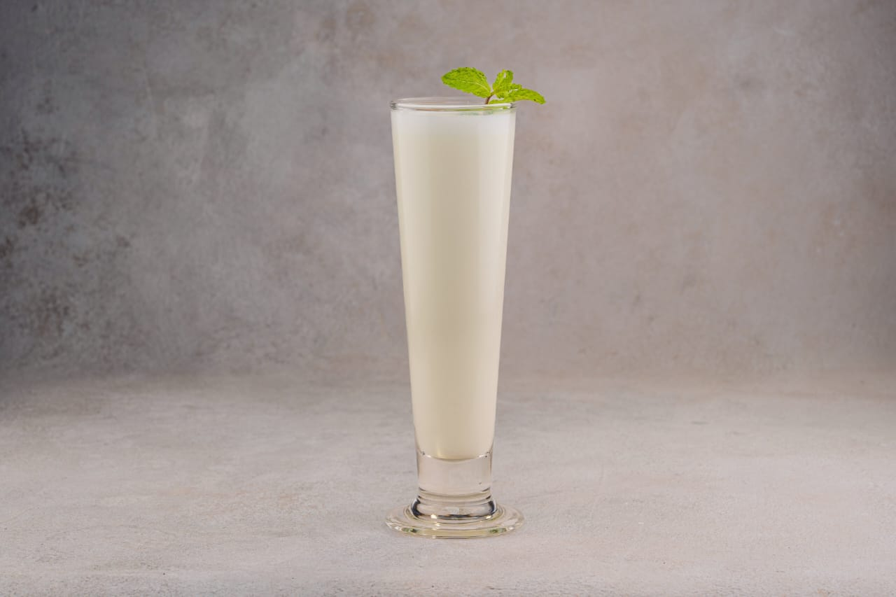

Indian-Lassi

Sweet Lassi, a yogurt based creamy, sweetened and chilled beverage.
Lassi is a traditional yogurt drink that's popular in North India. Made with yogurt, water or milk & various
seasonings, it can be made to a either sweet or salty drink. Sweet Lassi has ingredients like sugar, ground
cardamoms and some times milk or cream.
Ingredients
- ice cubes
- 1 ¾ cups plain yogurt
- 1 ½ cups ice water
- 6 cubes ice, crushed
- 2 teaspoons white sugar
- 1 pinch salt
Steps
- Fill 6 tall glasses with ice cubes.
- Place yogurt, ice water, crushed ice, sugar, and salt in a blender; blend until frothy.
- Pour over ice cubes in the glasses to serve.